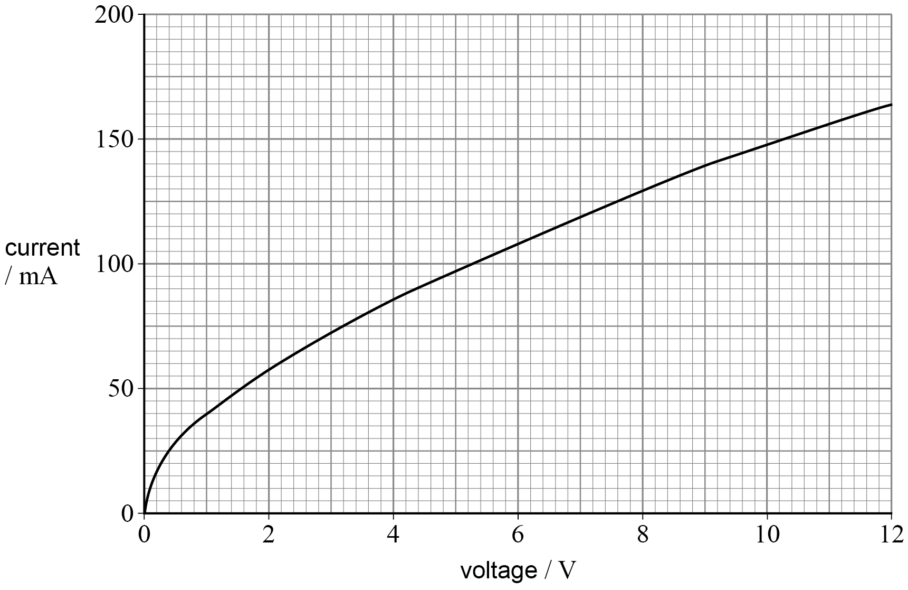

Two resistors connected together have total resistance $R_T = 10\ \Omega$. One is $12\ \Omega$.
What is the resistance of the other?
A. 2.0 Ω
B. 5.5 Ω
C. 17 Ω
D. 60 Ω
Answer: D (60 Ω)
Since $R_T (10) < R_1 (12)$, they must be in Parallel.
$\frac{1}{10} = \frac{1}{12} + \frac{1}{R_2} \Rightarrow \frac{1}{R_2} = \frac{1}{60} \Rightarrow R_2 = 60$.
Question 13
Filament lamp I-V graph. Identical lamp in parallel. Voltage = 6.0 V. Find Total Power.

A. 0.42 W
B. 0.65 W
C. 0.90 W
D. 1.3 W
Answer: D (1.3 W)
From graph at 6.0V, $I \approx 0.11$ A.
Power of one lamp $P = VI = 0.66$ W.
Two lamps in parallel: $P_{total} = 2 \times 0.66 \approx 1.3$ W.
Question 14
Superconducting component S in series with R. Voltage across combo is V.
A. I=V/R, Vs=0
B. I=V/R, Vs=V/2
C. I=inf, Vs=0
D. I=inf, Vs=V/2
Answer: A
Superconductor has $R=0$. So $V_S = IR = 0$.
Total $R_{total} = 0 + R = R$. So $I = V/R$.